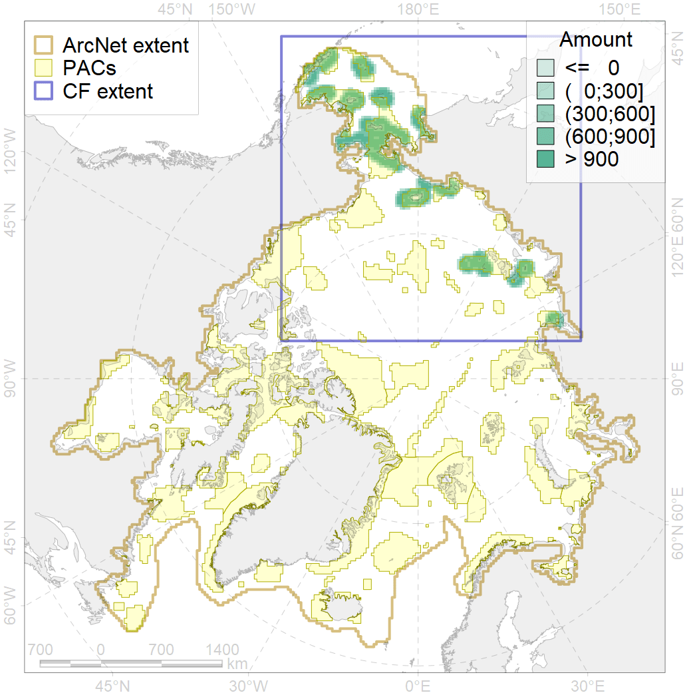
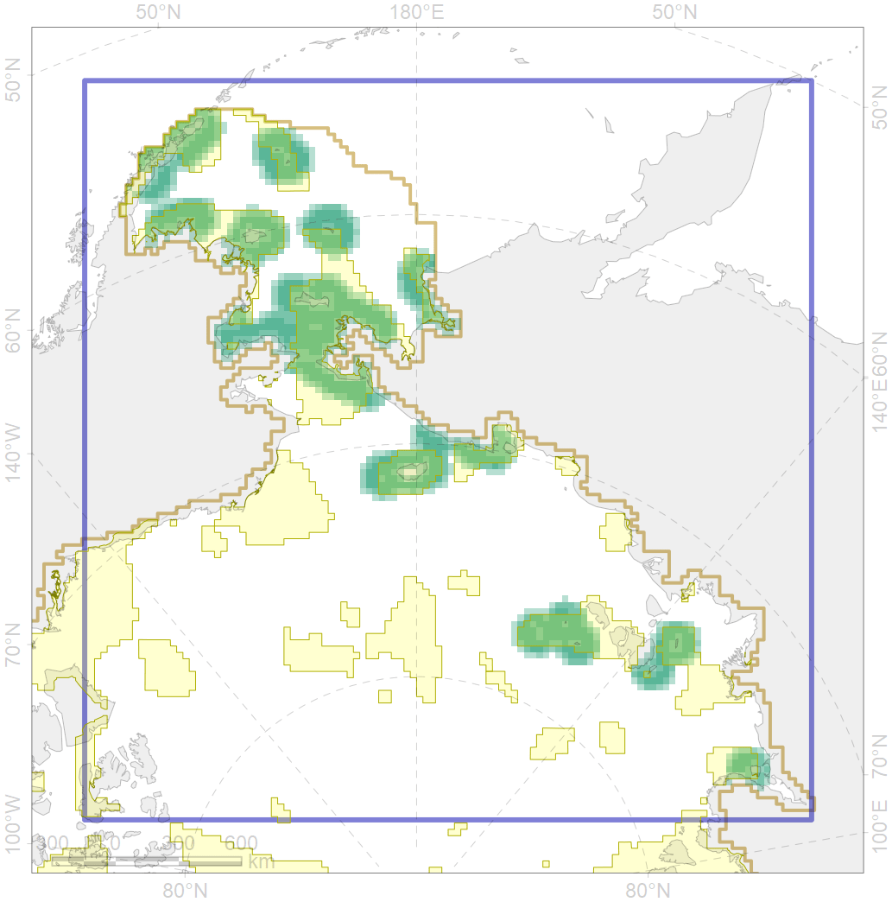

6100

| CF ID | 6100 |
| CF Name | Black-legged kittiwake (Rissa tridactyla pollicarius) breeding colonies buffer feeding area |
| Time Period | 1950-2010 |
| Source(s) | Circumpolar Seabird Data Portal http://axiom.seabirds.net/maps/js/seabirds.php?app=circumpolar#z=2&ll=NaN,0.00000, Garðarsson et al 2013, Bakken et al 2000, Gerasimova 1962, Krasnov & Ezhov 2013, Melnikov et al 2012, Frantzen et al 1993, Oien 2004, Tomkovich 1984, Gavrilo et al 1993, Vuilleumier 1995, Strom et al 1997, Uspenski 1956, Kalyakin 1993, Kalyakin 2001, Strom et al 1995, Pokrovskaya & Tertitski 1993, Boertmann et al 1996 |
| Seasonality | May-September |
| Depth Horizon | ≥0 m |
| Methodology | Buffer around colonies |
| Author Name | Gavrilo, Tertitski |
| Notes | |
| Conservation Target Set in the Scenario | 0.648 |
| Conservation Target Achieved in the Scenario | 0.648 (Scenario: 100.0%) |
| PAC ID | Proportion in the PAC | Contribution to ArcNet Target Achievement | PAC’s Contribution to the Achieved Target |
|---|---|---|---|
| 1 | 5.6% | 8.5% | 8.5% |
| 2 | 3.5% | 4.9% | 4.9% |
| 3 | 11.4% | 16.1% | 16.1% |
| 4 | 2.9% | 3.6% | 3.6% |
| 5 | 21.3% | 31.1% | 31.1% |
| 7 | 5.5% | 8.3% | 8.3% |
| 8 | 3.3% | 4.1% | 4.1% |
| 11 | 7.2% | 10.5% | 10.5% |
| 12 | 3.3% | 4.4% | 4.4% |
| 13 | 1.8% | 2.7% | 2.7% |
| inner | 65.9% | 94.2% | 94.2% |
| outer | 34.1% | 5.8% | 5.8% |